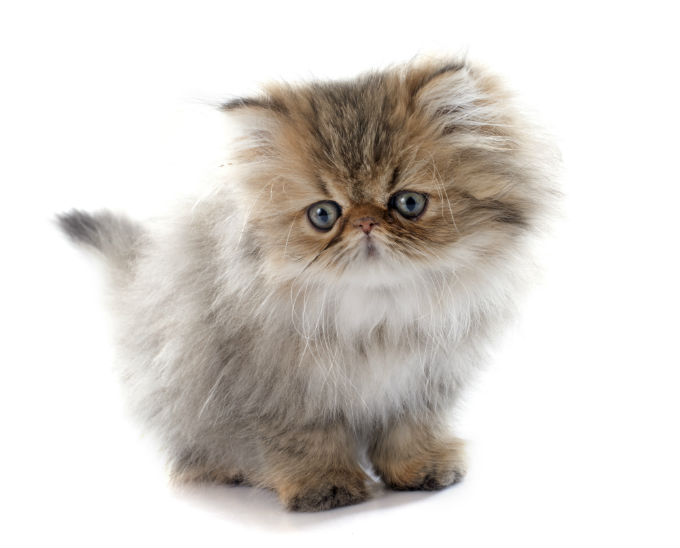
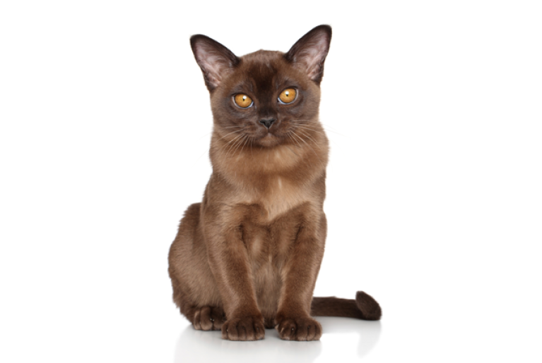
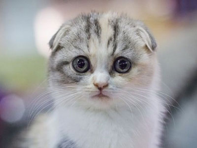

Persians
Persian cats
A distinctive feature of the Persian breed of cats is a small, broad
and snub nose. You can also note short and muscular legs. Types of Persian
cats with a very small, snub nose are called "extreme", and species from
a relatively long and slightly snub nose - "classical." The first are more
popular in the US, the latter - in Europe.
More

Burma
Burmese, or burmanskaya short-haired cat - a breed of short-haired cats. The cat
is distinguished by a muscular, strong body, short shiny hair, large round eyes
of yellow color. Burmese are affectionate, playful, attached to man, tolerant to
the neighborhood with other cats, and also with dogs.
More

Scots
Scottish Fold (Scottish Fold) - a breed of cats with a characteristic structure of the auricles that are
bent forward and down. The cause of the unusual appearance of these cats is
a gene mutation. If the kittens breed Scottish lop-eared to a certain age,
the ears remain straight,
then they get the name Scottish pryamouhie (Scottish Straight
More